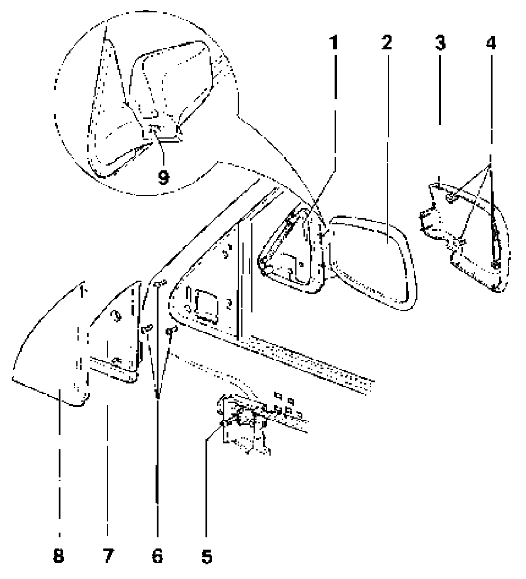

Exterior Rear-View Mirror, Removing and Installing
Exterior rear-view mirror, removing and installing

1 - Mirror housing
2 - Mirror glass
- Clipped in: use special tool 80- 200 (assembly lever) to remove
3 - Housing cap
- Material:ABS
- Removing:
Remove mirror glass and lift mirror housing toward door window.
Squeeze catches - 4- and -9- and pull off housing cap
4 - Catches
5 - Rear-view mirror actuator
6 - Oval head screw
- 2 Nm (17 in lb)
7 - Insulation
8 - Cover
9 - Catches